MTHE 493 Capstone - Queen's University - 2026 - GitHub - Thesis
My undergraduate thesis studied the networked finite-memory Pólya process on large scale-free networks. It explored consensus mechanics for the process on graphs with millions of nodes and compared strategies for influencing consensus.
I designed and implemented a simulation and data analysis framework to study the behaviour of these processes under varying constraints of network density and scale, process memory and information dissemination, and intervention vectors. The main technical challenge was computational. The initial implementation was limited to sparse networks of around one thousand nodes, whereas the final implementation can simulate dense networks in the range of 108 nodes.
An urn starts with R red and B black balls. At each step one ball is drawn at random and returned along with Δ more of the same colour. The fraction of red balls is a martingale and converges to a random limit with a Beta(R/Δ, B/Δ) distribution. The urn always settles, but where it settles is decided mostly by the first few draws, when each ball is a large share of the urn.
In the networked Pólya Process (Hayhoe, Alajaji & Gharesifard, 2018), each node in a graph has its own Pólya urn with Ri red and Bi black balls. Let Ni be node i's neighbours together with i itself. At each step, every node draws concurrently from its "super urn" comprised of the union of the red and black balls of all nodes in Ni. So it draws red with probability
P(Zi,n = 1) = Σj∈Ni RjΣj∈Ni (Rj + Bj)
and Δ balls of the drawn colour go into node i's own urn.
In the finite-memory variant of the process (Alajaji & Fuja, 1994), each ball added by a draw is removed M steps later. With Δ = 1, once the first M steps have passed, the proportion of red balls in an urn that started with R0 red and B0 black balls is
R0 + Zn−M+1 + … + ZnR0 + B0 + M
where Zt is 1 if the draw at step t was red and 0 otherwise.
Many real networks are scale-free, meaning most nodes have few connections while a small number are hubs with many connections. The Barabási–Albert model (Barabási & Albert, 1999) produces this behaviour through a preferential attachment mechanism. Starting from a fully connected core of m0 nodes, each new node makes m connections, attaching to an existing node i with probability
Πi = kiΣj kj
where ki is node i's degree. As a result highly connected nodes are likely to gain additional connections, which gives a power-law degree distribution, P(k) ∝ k−3. Larger m means a denser graph with shorter average paths between nodes.
A switch network (also called threshold graph) is built by adding nodes that are either dominating (connected to every node already present) or isolated (connected to none), chosen by a coin flip or by a draw from a separate Pólya urn. A dominating node enters the super urn of every node it attaches to, which is the basis of the first intervention strategy below. Switch networks are extremely dense, since a dominating node at position n brings n edges, yet they can be simulated without storing a single edge (see below).
We compared two ways of pushing the network toward a red consensus, both aimed at its most central nodes.
Simulating the networked Pólya process can be expressed as the following 4 step pipeline.
The simulator's design was an iterative process that changed drastically as the scope of the thesis became clear. Exploiting the data parallelism offered by GPUs was key in scaling the simulation up to tens of millions of nodes. Each step of the pipeline was written as a sequence of array and matrix operations covering the whole network, which are ran on the GPU as CUDA kernels to process as many nodes as possible node in parallel. The following sections describe how each step was implemented, and lay out its cost in time and memory for a network of N nodes and E edges.
Sampling from the attachment probabilities Πi was implemented with an edge list, a dynamic 2E×1 array to which both endpoints of every new connection are appended. Node j appears in the list once for each of its connections, so sampling randomly and uniformly from it selects nodes according to preferential attachment in O(1) time.
The network generation step was further optimized for time by batching the growth steps. Each batch of new nodes is added concurrently, with all connections chosen randomly from the same snapshot of the graph. The total work stays O(mN), but the number of sequential steps drops from N to the number of batches.
Once growth is finished, the edge list is converted into a compressed sparse row (CSR) adjacency matrix A, which stores only the edges that exist rather than an N×N grid of zeros and ones. The conversion takes O(N + E) time, and the matrix takes O(N + E) memory instead of O(N2).
Computing the super urns was implemented by storing every urn in an N×2 integer matrix U, with one row of red and black counts per node, so that all N super urns come from a single sparse matrix product,
S = (A + I)U,
since row i of AU sums the urns of node i's neighbours and adding U includes node i's own. Each node then draws by comparing one uniform random number with the red fraction of its row of S, and Δ balls are added to the drawn column of U. The product takes O(N + E) time and the draws take O(N).
On the GPU, the sparse product is computed by cuSPARSE and the random numbers are generated by cuRAND. Because the nodes draw concurrently from the same state and each writes only to its own row of U, every operation runs as a parallel CUDA kernel with no synchronization between threads. The costs above are for a sequential implementation, which processes one node at a time. On a GPU with P cores the same work is shared among the cores, so a step ideally takes O((N + E)/P) time, with P = 1,536 on the GTX 1660 Ti.
Finite memory was implemented with an M×N ring buffer holding each node's last M draws. At step n, row n mod M holds the draws from step n − M, which are subtracted from the urns before the row is overwritten with the current draws. This takes O(N) time per step regardless of M, and O(MN) memory.
The centrality rankings were computed only once, before the first intervention. Degree centrality is found by counting each node's appearances in the edge list and sorting the counts, which takes O(E + N log N) time. Eigenvector centrality is found by power iteration, repeating x ← Ax / ‖Ax‖ for at most 100 iterations, each of which is an O(N + E) sparse matrix-vector product.
Since the switch-network intervention adds nodes to the network, each event copies the urn, reinforcement and memory arrays into larger ones, appends the new edges to the edge list and rebuilds the CSR matrix, which takes O(MN + E) time. Direct injection leaves the network unchanged and only adds red balls to k rows of U, so it takes O(k) time.
Under the design detailed above, the simulator was capable of representing scale-free networks of around 3×107 nodes, running hundreds of Pólya steps in just a few minutes. For the purpose of collecting and analyzing data for the thesis, this implementation was more than sufficient, however when benchmarking the code on different devices at large node counts, I noticed that the performance of the GPU dropped drastically around 7×107 nodes. The table and graph below from benchmarking illustrate these results, timing the task of growing an m = 3 Barabási–Albert network, building the CSR matrix, and running 100 Pólya steps. Benchmarks were run on available consumer hardware and modern data center chips.
| Nodes | Edges | Ryzen 3 3100 | GTX 1660 Ti | A100 |
|---|---|---|---|---|
| 2.2 M | 6.7 M | 38.2 s | 3.7 s | 1.7 s |
| 17.9 M | 53.7 M | 348 s | 25.3 s | 9.3 s |
| 71.6 M | 215 M | 1,565 s | 1,557 s | 37.9 s |
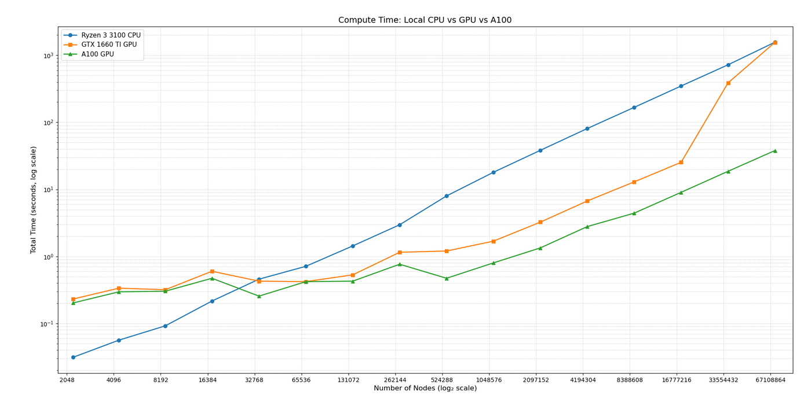
To try to understand why the performance improvements offered by the 1660 Ti dissapear around the 70 million node mark, I traced the benchmark using NVIDIA Nsight systems, and traced the dominating kernels with Nsight Compute. The traces cover a networked process of 8.9 million nodes, where the whole simulation fits in the 6 GB of VRAM, as well as a process of 71.6 million nodes where it does not.
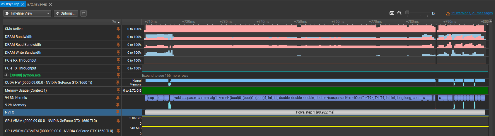
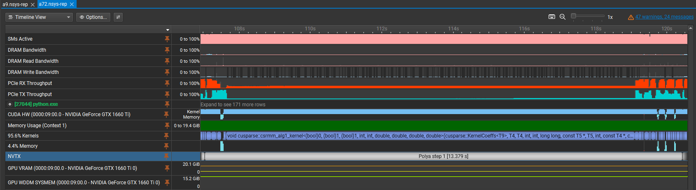
At both sizes cuSPARSE's csrmm_alg1_kernelkernel takes the majority of the time for a single Pólya step.
The kernel computes the matrix product AU, and it runs for 67 ms of a 91 ms step at 8.9 million nodes and for
11.5 s of a 13.4 s step at 71.6 million, making the kernel is 170 times slower for a graph only 8 times larger.
The GPU Metrics rows show where the difference comes from. At 8.9 million nodes the kernel reads VRAM at about 39% of its peak
bandwidth and PCIe is idle. At 71.6 million nodes VRAM reads fall to about 1%, and PCIe receive throughput holds at
about 25% of the link for the whole kernel.
For the larger network, the data needed to compute the mega urns is held in system RAM, as the simulation needs far more than the 6GB of VRAM available on the GPU to represent the connections, urns, and memory of the process. That being said, a large part of the memory allocation isnt useful for the graph; the CSR matrix stores its values as float32 and the urns are int32, so when multiplying them their product AU must be promoted to float64. This means that on every step the matrix is rebuilt in float64, copying the column indices and row pointers along with it, and copying U and the result into float64 as well. At 71.6 million nodes that is 7.7 GB of temporaries per step, more than twice the CSR matrix itself.
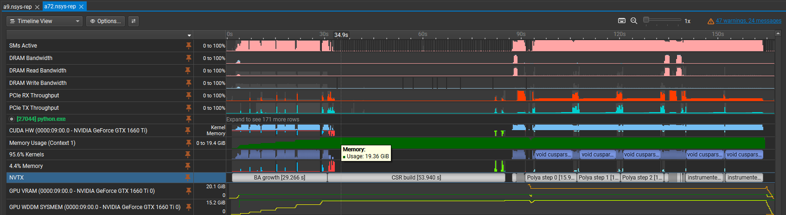
GPU memory on Windows is managed by WDDM (the Windows Display Driver Model). When VRAM is full the driver makes allocations in system RAM, meaning that the GPU must reach it across the PCIe bus at a rate of 16 GB/s, instead of reading its own VRAM at up to 288 GB/s. By the end of growth at 71.6 million nodes, the driver has kept 5.4 GB of the simulation in VRAM and placed the other 13.8 GB in system RAM.
Originally I expected the poor performance was caused by WDDM moving the CSR and urn data back and forth between system RAM and VRAM during the polya step, however the trace shows that this barely happens. The driver moved only 0.1 GB between VRAM and system RAM during the first Pólya step and nothing in the steps after. Whatever the driver has placed in system RAM stays there, and the kernels read it directly across PCIe on every step.
For the large process, the arrays left in system RAM include the float64 copies of A and U and the array the product writes its result into. U in particular causes a lot of delay, because the sparse product reads it at random. To compute row i of AU, the kernel goes through node i's neighbours j and reads row j of U, and since a node's neighbours can be anywhere in the array (because they were picked randomly during the growth phase) the data access pattern is incredibly poor.
Reads like these are the worst case for PCIe, the timeline above shows the link at only about 25% of its capacity while the kernel runs. One matrix product moves 44.7 GB across PCIe in 11.6 s, an average of 3.9 GB/s. The bus is mostly idle, so the kernel is not waiting for bandwidth. It is waiting on round trips. Each read travels from the GPU across PCIe, through the CPU's memory controller to the RAM and back, before its data arrives, and the GPU can only have a limited number of reads in flight at once. A separate test I ran of random reads from system RAM also found that each 8-byte read pulls about 43 bytes across the link, so most of what does cross the bus is never used.
Nsight Compute can break a kernel's memory traffic down further, but its full memory analysis could not be collected at 71.6 million nodes, because profiling needs GPU memory of its own and the run is already close to the 21.8 GB that WBBM allows in total. The charts below instead compare the kernel at 8.9 million nodes, where everything fits in VRAM, with 35.8 million nodes, where the simulation has allocated more than twice the free VRAM and the slowdown has already begun.
In the run profiled at 35.8 million nodes, the driver had placed the float64 copy of the matrix and the result array in system RAM, but U was still in VRAM. Most of the kernel's traffic therefore still goes to VRAM: it reads 27.4 GB from VRAM and only 3.4 GB across PCIe, and its 1.5 GB of writes go to the result array in system RAM. Even so, the kernel takes 574 ms, 8.7 times as long as at 8.9 million nodes for only 4 times as many nodes. The slow reads hold up the fast ones. A thread cannot read a neighbour's urn from U until the matrix entry naming that neighbour has arrived from system RAM, so the kernel's VRAM reads slow from 113 GB/s at 8.9 million nodes to 48 GB/s. Nsight Compute's warp statistics show the same thing. A warp now waits on average 393 clock cycles between instructions instead of 180, and three quarters of that time is spent waiting for loads to return.
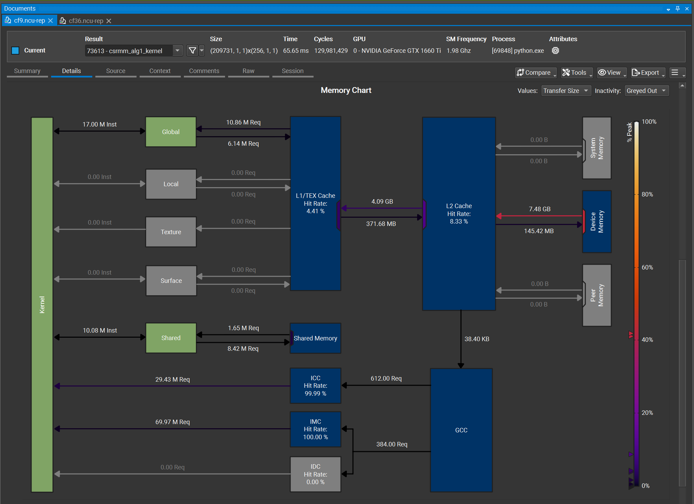
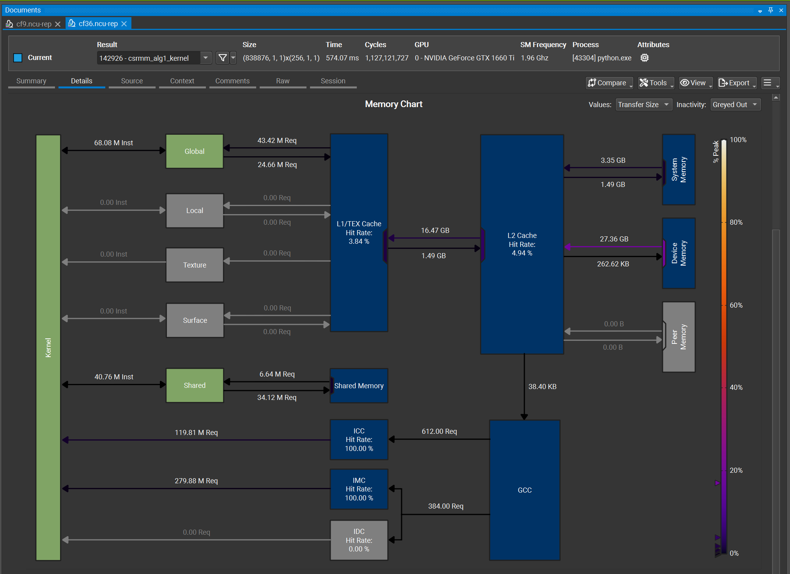
Together, the traces explain the slowdown. The sparse product makes a random read for every stored entry of the matrix, which is fine while everything fits in VRAM. Once the simulation's allocations outgrow VRAM, the driver puts some of the product's arrays in system RAM, and from then on part of the kernel's reads must make a round trip across PCIe. Even a small share of such reads stalls the whole kernel, and at 71.6 million nodes, with U itself in system RAM, all 859 million random reads of U cross the bus. The GPU is then reading at random from system RAM, just as the CPU does when it runs SciPy's single-threaded sparse product at 15.0 s per step, which is why the 1660 Ti ends up level with the Ryzen.
With the source of the performance degradation identified, the next step was to come up solutions to relieve the bottleneck. The first makes the step use far less GPU memory, so that everything it reads stays in VRAM. The second makes the random reads cheaper, by numbering the nodes so that neighbours sit close together in memory. The third handles graphs too large for VRAM even after the first change, by leaving only data that is read in order on the far side of PCIe. Each change was traced with the same Nsight setup as above.
A critical observation about the Pólya step is that each node's super urn is needed only for two operations: finding the node's red fraction, and comparing it with a random number to make the draw. The code has cuSPARSE compute all of S = (A + I)U first before implicitely writing the whole N×2 array to memory in float64. Subsequent kernels then read S back from memory, divide to get the red fractions, and compare.
I replaced the seperate product and draw kernels with a single custom CUDA kernel, compiled at run time to avoid excessive memory writes. For each node, it gathers the neighbours' urns into the super urn, divides and makes the draw straight away, while the sums are still held in the threads' registers (the GPU's fastest storage, private to each thread). The super urns are still computed, but S is never written to memory or read back.
The kernel assigns four threads to each row of the CSR matrix (ie each node), splitting the node's list of neighbours between them. For each neighbour, a thread reads that neighbour's red and black counts from U together, as a single 8-byte load, and adds them to running totals kept as 64-bit integers. The four threads then combine their partial totals using warp shuffles, letting thethreads in the same warp exchange values directly instead of through memory. One of the four threads adds the node's own urn, compares a uniform random number with the red fraction, and writes the node's draw. A second, small kernel then adds Δ balls to the drawn colour in each node's row of U.
This targets each of the costs found during profiling.
The sums are exact, and the final division and comparison are the same float64 operations as before, so given the same random numbers the new step produces exactly the same urns as the old one, bit for bit. I checked this at sizes from 1.1 to 71.6 million nodes, with and without finite memory, and with random reinforcement.
With these changes, the steps at 71.6 million nodes use about 3 GB of GPU memory, and every array they read stays in VRAM. The timeline below shows the same rows as the original step above. The step now takes 0.29 s instead of 13.4 s, 46 times faster than before and 51 times faster than the CPU. The kernel reads VRAM at about 39% of its peak bandwidth, as cuSPARSE did at 8.9 million nodes, and no PCIe transfers occur. The fused kernel is also faster for small networks what could fit entirely in VRAM. At 8.9 million nodes, the fused kernel takes 32 ms against cuSPARSE's 67 ms, because it makes half as many random reads.
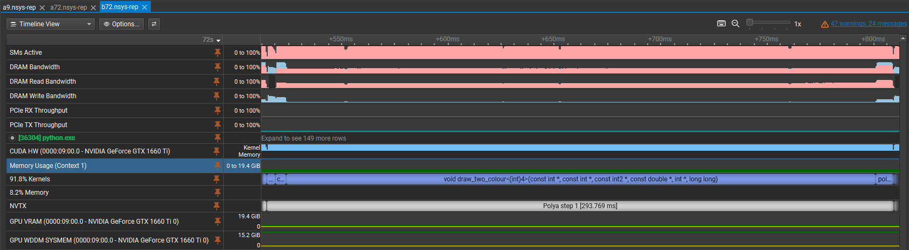
draw_two_colour) takes
0.28 s where cuSPARSE took 11.5 s. DRAM Read Bandwidth, the kernel's reads from VRAM, sits near 39%
against about 1% before, and PCIe RX Throughput stays at zero because nothing is read from system RAM.
Nsight Compute confirms that nothing crosses PCIe any more. The fused kernel reads all 30.8 GB of its data from VRAM and moves nothing to or from system RAM. For comparison, cuSPARSE at half this size, 35.8 million nodes, read 3.4 GB from system RAM and wrote 1.5 GB to it.
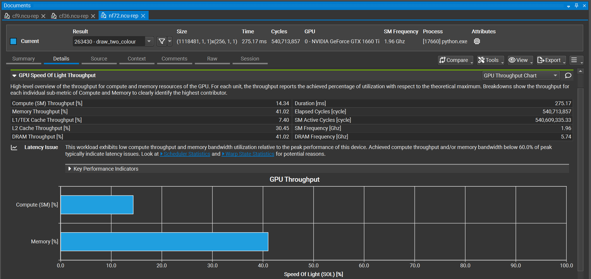
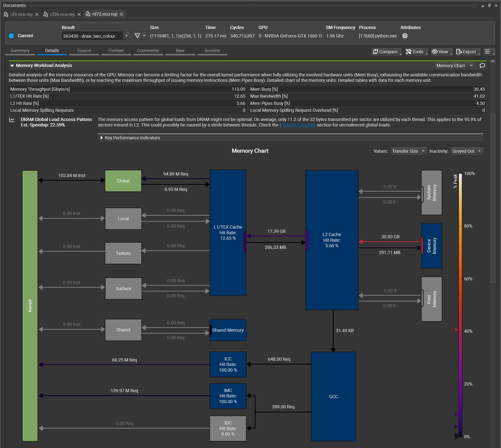
Even with all of its data stored in VRAM, the simulation is still memory bandwidth bound. Examining the above memory charts, the fused kernel reads VRAM at 113 GB/s, only 41% of the card's peak, and its warps spend 90% of their time waiting for loads to return.
This bottleneck is the result of poor data access patterns that are inherent to large random graphs. The GPU runs its threads in groups of 32 called warps, and the threads of a warp execute each instruction together, so a load instruction requests 32 addresses at once. The load is handled in the following stages:
In the fused kernel each warp handles 8 rows, four threads per row, so a load of U requests the urns of up to 32 different neighbours spread across the array. These rarely share a sector, so the load becomes 32 separate requests, each using 8 bytes of its sector. U takes 573 MB at 71.6 million nodes, almost 400 times the size of the L2 cache, so a sector is usually evicted before another row reads a nearby urn, and only 5.7% of L2 lookups hit. Except for the hubs, whose urns are read often enough to stay cached, nearly all of the kernel's 429.5 million neighbour reads go to VRAM and fetch 64 bytes to use 8, about 27.5 GB in total. Together with the roughly 3 GB of arrays read in order, this accounts for the 30.8 GB the kernel reads from VRAM.
A warp cannot continue until all 32 of its values have arrived, so each load takes as long as its slowest read, several hundred cycles when it goes to VRAM. The SM switches to other warps in the meantime, but since they all make the same scattered reads, they all end up waiting. As a result the warps spend 90% of their time waiting on loads while VRAM runs well below its peak bandwidth.
The reads are scattered because nodes are numbered in the order they were added, and preferential attachment connects each new node to earlier nodes from across the whole graph. At 17.9 million nodes the growth order gave about the same step time as a random numbering, 71.4 ms against 73.2 ms, and sorting the nodes by degree did not help either. Renumbering the nodes in breadth-first order from the largest hub does help. The hub becomes node 0, its neighbours take the next numbers, then their neighbours, and so on. Most of a node's neighbours then sit close together in U, so more of them share sectors within a load, and their sectors are more likely to still be cached when they are read.
On the renumbered graph, the kernel's L2 hit rate rises from 5.7% to 9.7% and its L1 hit rate from 12.7% to 21.9%, and the data it reads from VRAM falls from 30.8 GB to 22.5 GB. The kernel takes 193 ms instead of 275 ms, and a full step 0.21 s instead of 0.29 s, 28% faster. Reverse Cuthill–McKee ordering, a standard method for clustering a sparse matrix's entries near its diagonal, gives the same result.
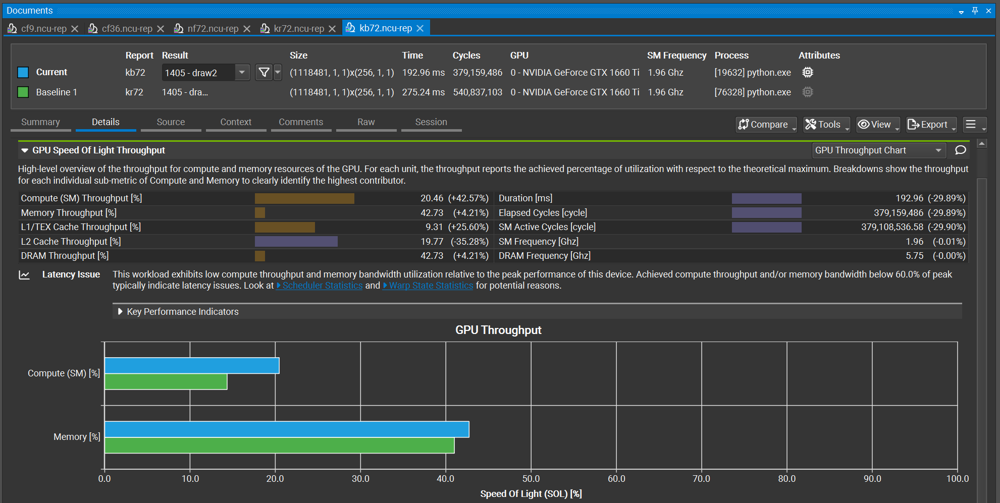
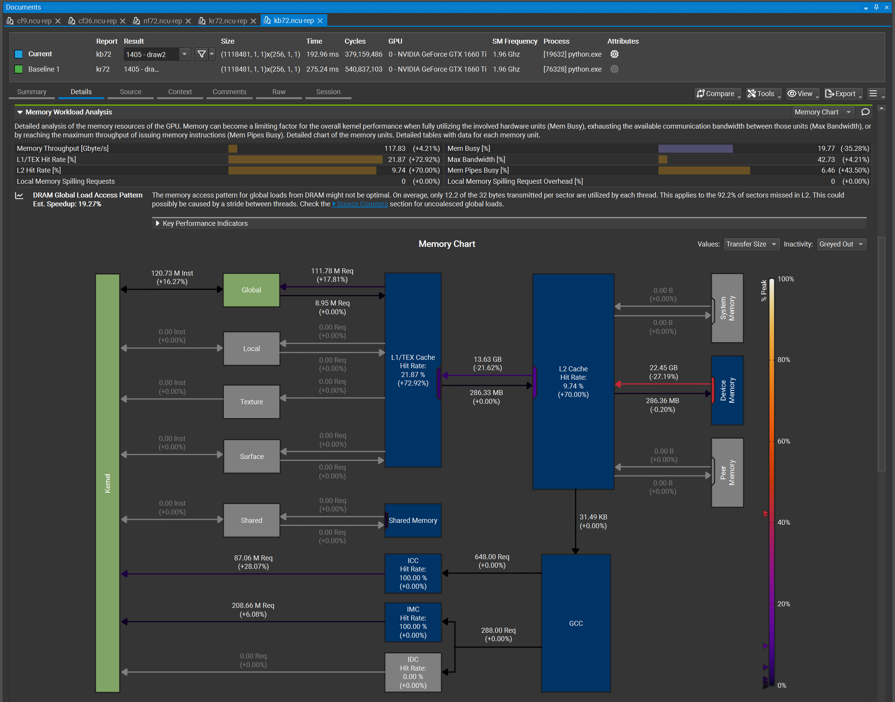
Renumbering is not yet part of the simulator. The breadth-first search and relabelling took 98 s with SciPy on the CPU, more than the 8 s the faster kernel saves over 100 steps, and the interventions use the original node IDs, so the new numbering would have to be mapped back for them. The gain is also limited by the network itself. A Barabási–Albert graph is a small world, where almost every node is within a few hops of every other, so no numbering can keep every node's neighbours close together. Propagation blocking, which sorts the reads into bins by destination so that they become sequential, avoids this limit, but it needs several gigabytes of buffers, more than fits next to a 71.6 million node graph on a 6 GB card.
Freeing memory only goes so far. At 143.2 million nodes even the fused kernel's data does not fit in VRAM: the column indices alone take 3.4 GB, and with U, the row pointers and the step's random numbers, the step needs more than the 5.0 GB free. Something has to go in system RAM, and the profile shows which array can live there cheaply. The kernel reads U at random, and each random read across PCIe pays a full round trip. The column indices, however, are read once per step, in order, and a stream of in-order reads can run close to the full speed of the link, since each request brings back a full chunk of useful data.
So when the graph does not fit, the simulator places only the column indices in system RAM, in pinned (page-locked) memory. The operating system cannot move or page out pinned memory, which lets the GPU read it directly across PCIe while the kernel runs, without first copying it into VRAM. U and the row pointers stay in VRAM. The simulator makes this choice automatically when it builds the CSR matrix, by comparing the memory the step will need with the free VRAM.
Forcing this placement at 71.6 million nodes, where the graph would otherwise fit, shows what it costs. In the timeline below, PCIe receive throughput holds at about 70% of the link for the whole kernel, almost three times the rate of the original spilled step, because these reads are in order. Yet the step takes 0.287 s, against 0.293 s with the indices in VRAM. The kernel's time is set by the slower random reads of U, and the reads of the indices happen while it waits on those, so carrying the matrix across the bus adds no time to the step. At 143.2 million nodes, with 859 million stored entries, a step takes 0.58 s, twice the time at 71.6 million nodes for a graph twice the size.
The usual alternative is to stream the matrix explicitly: copy it into VRAM one block at a time on one CUDA stream, while a second stream runs the kernel on the block copied before it. A CUDA stream is a queue of GPU work, and work in different streams is allowed to run at the same time. With two 128 MB buffers this took 0.425 s per step. The copies ran at 13.1 GB/s, close to the 14.8 GB/s the link reached in the in-order test above, but the trace shows that they never overlapped with the kernels. The GPU copied two blocks, then processed two blocks, and so on, so the step took the copy time and the compute time added together, 132 ms plus 277 ms. Even with perfect overlap, streaming could at best have matched reading the indices in place, which overlaps the transfers with the computation on its own, one load at a time.
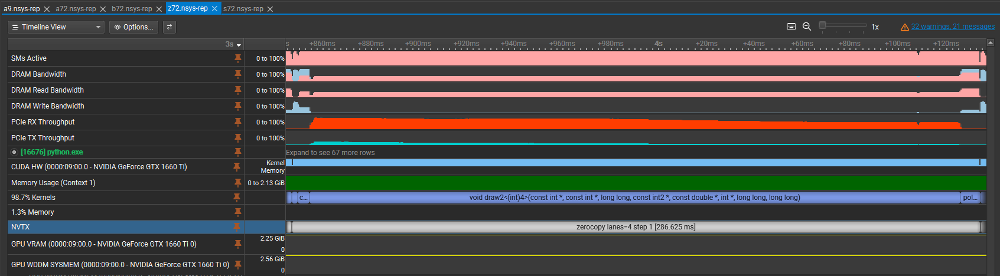
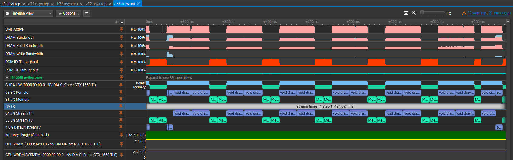
Python, NumPy, SciPy (sparse matrices), CuPy and CUDA, Google Colab, Matplotlib, Gephi.